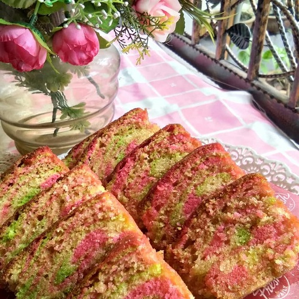
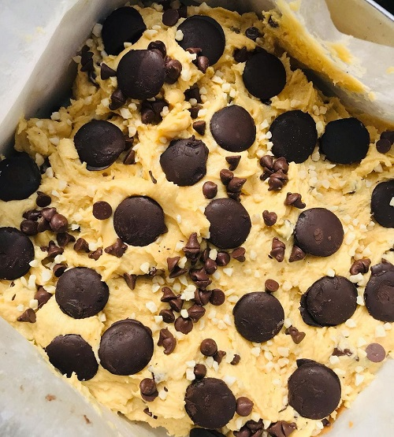

Baking 🍰


Baking also one of my hobbies that I did when I have some free time. I start baking when I was kids. I helped my mother making and completing order of chocolate cakes from the customers. I just baking because I love to see people's smile and happy when they eat the cakes that I made. I feel so satisfied. Right now, I can say that I am excellent in making buttercake and congobars cake.
None